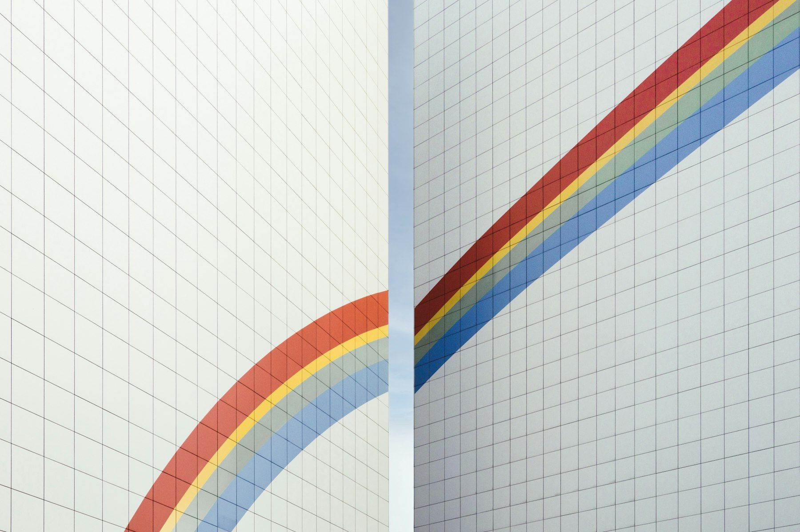

TL;DR
Tracking apps are essential for freelancers to manage time, invoices, and projects efficiently. This guide reviews key features, top apps, and best practices for maximizing productivity.
Understanding the Importance of Tracking for Freelancers
Tracking time and tasks is crucial for freelancers. It not only helps in understanding how much time you spend on different projects but also aids in accurate invoicing. Many freelancers struggle with accurately estimating their working hours, which can lead to undercharging or overextending themselves. By keeping track, freelancers can identify their peak productivity hours and optimize their schedules accordingly. Additionally, tracking tools can help provide insights into project timelines, allowing for better planning and client communication. You don’t want to lose time or money, and effective tracking is the first step in securing both.
Features to Look for in Freelance Tracking Apps
When assessing apps for tracking, look for features that best cater to your needs. Essential features include time tracking, invoicing capabilities, project management tools, and reporting options. You also want an intuitive interface that makes the app easy to use. Integration capabilities with other apps you use are vital. For instance, does it sync with your calendar? What about payment platforms? These integrations can streamline your workflow, reducing the need for manual entries. Security should be a priority as well, as sensitive client information may be involved.
The Top Apps for Freelancers Tracking Their Work
1. **Toggl Track**: Known for its simplicity and effectiveness, Toggl allows you to easily track your time with a one-click timer. It has robust reporting tools to analyze where your time is spent. 2. **Harvest**: Ideal for project management, Harvest offers time tracking and invoicing combined, allowing you to see how many hours each client project takes and what you should bill. 3. **Clockify**: A free tool that offers excellent time tracking functionality with features to manage projects and tasks effectively. 4. **Airtable**: While not solely a time tracker, Airtable provides customizable templates that can be tailored for freelance project management.

Comparing the Best Tracking Apps
To choose the right app, create a comparison chart based on key features, pricing, and client feedback. For example, Toggl Track offers a free version but charges for more advanced features, whereas Clockify is completely free but may lack some premium functionalities. Look into user reviews. Websites like G2 and Capterra provide insights from actual users, helping you understand the app's strengths and weaknesses. Use this comparison approach to narrow down your options to a few top candidates, then test them to see which fits your workflow best.
Common Mistakes When Choosing Tracking Apps
Freelancers often rush into selecting a tracking app without considering their specific needs. One common mistake is overlooking the app’s compatibility with existing tools. Imagine finding the perfect time tracker only to realize it doesn’t sync with your invoicing tool! Another error is failing to utilize the app’s full potential. Many apps come with underused features—like reporting and analytics. Take the time to explore all functionalities to gain maximum benefit. Lastly, don’t ignore the feedback loop; adapting based on interactions with clients and changes in work style is essential.
Tips for Effectively Using Tracking Apps
Start by setting clear goals for what you want to achieve with the tracking app. Are you aiming for better time management or more accurate invoicing? Once you know your objectives, use the app consistently for a few weeks to gather data. Regularly review the collected data to adjust your workflows. Set reminders to track tasks in real-time; delaying may lead to inaccuracies. Consider sharing your reports with clients if your project allows transparency, showcasing how diligently you manage your time.
Next Steps to Optimize Your Freelance Operations
Once you’ve selected and started using a tracking app, think about other areas to streamline. Look into invoicing apps that integrate with your time tracker to save time on billing. Explore project management tools for larger projects that require team collaboration. Develop a daily or weekly review process to evaluate how your tracking translates into productivity. This can reveal patterns—such as tasks that consistently take longer, enabling you to adjust timelines for future projects. Aim to create a holistic operational framework that leverages technology for maximum efficiency.
FAQ
What is the best app for freelancers tracking time and tasks?
The best app varies based on needs, but Toggl Track and Harvest are top contenders due to their features and ease of use.
Can I use multiple tracking apps simultaneously?
Yes, but it’s advisable to find one app that meets most of your needs to avoid confusion.
How do I ensure accurate time tracking?
Be consistent in logging time, and set reminders to do so in real-time. Explore features like idle detection.
Are there free options for freelance tracking apps?
Yes, apps like Clockify offer free versions with basic features suitable for many freelancers.
How often should I review my time tracking reports?
Weekly reviews can provide timely insights and help adjust your work habits effectively.
Photo credits
- Photo 1: Realmac Software on Unsplash (https://unsplash.com/@realmacsoftware) (https://unsplash.com/photos/apple-computer-set-2AEWZWmfuWs)
- Photo 2: Iyus sugiharto on Unsplash (https://unsplash.com/@iyussugiharto) (https://unsplash.com/photos/a-close-up-of-a-computer-screen-with-different-logos-Eh1xd5xDE-s)
- Photo 3: Martin Martz on Unsplash (https://unsplash.com/@martz90) (https://unsplash.com/photos/a-paper-cut-of-a-sunset-over-a-body-of-water-CiQ2qEYVo5U)
- Photo 4: Nikita Pishchugin on Unsplash (https://unsplash.com/@nikita_pishchugin) (https://unsplash.com/photos/a-couple-of-white-walls-with-a-rainbow-painted-on-them-igY5eu9oD_c)
- Photo 5: Samsung Memory on Unsplash (https://unsplash.com/@samsungmemory) (https://unsplash.com/photos/man-in-white-and-black-plaid-dress-shirt-using-macbook-fuhU4o7jrE4)
- Photo 6: Oliur on Unsplash (https://unsplash.com/@ultralinx) (https://unsplash.com/photos/person-holding-space-gray-iphone-x-_8S9nEmCZK0)
- Photo 7: Crew on Unsplash (https://unsplash.com/@crew) (https://unsplash.com/photos/man-using-a-gray-laptop-computer-IXHNBGTKJfw)